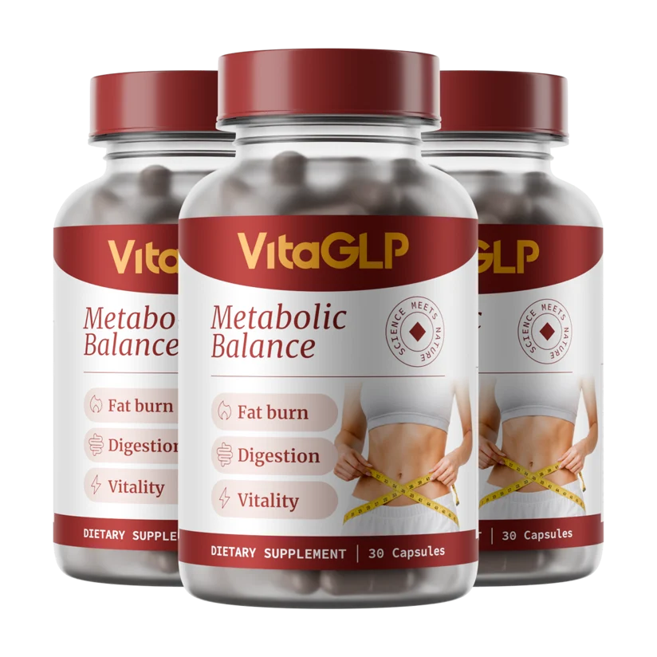

Von über 5.000 Kunden für seine Wirkung gelobt
Entfesseln Sie Ihren natürlichen Fettverbrennungs-Modus
Verabschieden Sie sich von einem trägen Stoffwechsel. VitaGLP reaktiviert Ihren inneren Rhythmus durch wissenschaftlich fundierte Pflanzenkraft – für nachhaltige Energie und eine schlanke Silhouette.

Zertifizierte Sicherheit
Premium-Versand
Land wählen für exklusive Angebote
Profitieren Sie von regionalen Rabatten und versichertem Priority-Versand direkt vor Ihre Haustür.


Häufig gestellte Fragen
Transparenz schafft Vertrauen. Hier erfahren Sie, wie VitaGLP Ihren Körper unterstützt.
Wie funktioniert der Stoffwechsel-Reset durch VitaGLP?
VitaGLP nutzt die Synergien pflanzlicher Extrakte, um die natürliche Thermogenese des Körpers zu unterstützen und den Stoffwechsel sanft, aber effektiv zu reaktivieren. Es hilft, festgefahrene Prozesse wieder in Schwung zu bringen.
Ist VitaGLP für eine dauerhafte Einnahme sicher?
Ja, absolut. VitaGLP basiert auf 100% natürlichen, hochwertigen Inhaltsstoffen, die für ihre Reinheit und Verträglichkeit bekannt sind. Es enthält keine aggressiven künstlichen Stimulanzien.
Wie unterscheidet sich VitaGLP von herkömmlichen Produkten?
Im Gegensatz zu einfachen Fatburnern fokussiert sich VitaGLP auf das metabolische Gleichgewicht. Der Ansatz ahmt natürliche Sättigungs- und Energieprozesse nach, anstatt den Körper unter Stress zu setzen.
Kann ich VitaGLP mit meiner Ernährung kombinieren?
VitaGLP lässt sich ideal in jeden Lebensstil integrieren. Es unterstützt jede Form der bewussten Ernährung, indem es hilft, Heißhungerattacken zu reduzieren und das allgemeine Wohlbefinden zu steigern.
Wie schnell werde ich erste Veränderungen spüren?
Die meisten Kunden berichten von einem gesteigerten Energieniveau bereits in den ersten 14 Tagen. Für tiefgreifende metabolische Resultate empfehlen wir die Einnahme über einen Zeitraum von mindestens 60 Tagen.